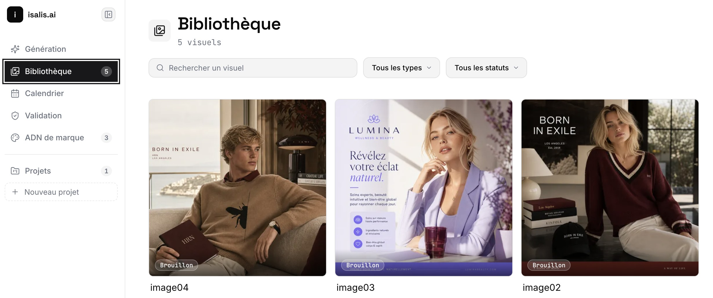

L'IA de contenu que nous avons conçue, et que nous utilisons chaque jour.

Isalis apprend l'identité visuelle et le ton de votre marque, puis crée et publie visuels, vidéos et textes sur vos réseaux, avec validation humaine avant toute diffusion. C'est un outil que nous avons d'abord construit pour notre propre usage chez Sundatalab, avant de le proposer en licence à nos clients.
Beaucoup d'outils d'IA gratuits venus des grandes plateformes américaines ne sont aujourd'hui pas déployés en Europe, faute de s'être mis en conformité avec le RGPD et l'AI Act. Isalis est conçu pour l'Europe dès le premier jour.
Sundatalab conçoit et fait tourner des outils d'intelligence artificielle qui font croître les entreprises. Les nôtres, en licence. Les vôtres, sur mesure.
Questions fréquentes
Isalis est-il un outil développé par une autre entreprise, ou par Sundatalab ?
Isalis est conçu, développé et utilisé en interne par Sundatalab avant d'être proposé en licence à nos clients. Ce n'est pas un outil tiers que nous revendons.
Combien coûte Isalis ?
Isalis est disponible en licence, de 19 à 199 euros par mois selon le volume, les marques et les canaux. Le détail des formules et l'essai se trouvent sur isalis.ai.
Isalis publie-t-il du contenu automatiquement, sans contrôle humain ?
Non. Isalis apprend l'identité visuelle et le ton de votre marque puis crée vos visuels, vidéos et textes, mais rien n'est publié sur vos réseaux sans votre validation préalable.
Isalis est-il conforme au RGPD et à l'AI Act ?
Oui. Contrairement à de nombreux outils d'IA gratuits venus de grandes plateformes américaines, qui ne sont aujourd'hui pas déployés en Europe faute de conformité, Isalis est conçu et hébergé pour l'Europe dès le premier jour.
Où trouver les fonctionnalités, cas d'usage et tarifs détaillés d'Isalis ?
Sur isalis.ai, le site dédié au produit. Cette page présente Isalis dans le contexte de Sundatalab, l'entreprise qui l'a conçu et qui l'utilise elle-même chaque jour.
Voir Isalis fonctionner sur votre marque
Fonctionnalités, cas d'usage, tarifs et essai : tout se trouve sur isalis.ai.
Sundatalab conçoit et fait tourner des outils d'intelligence artificielle qui font croître les entreprises. Les nôtres, en licence. Les vôtres, sur mesure.